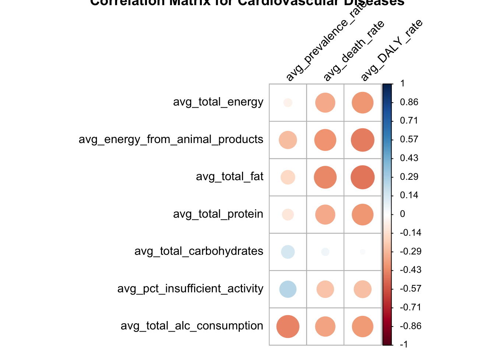
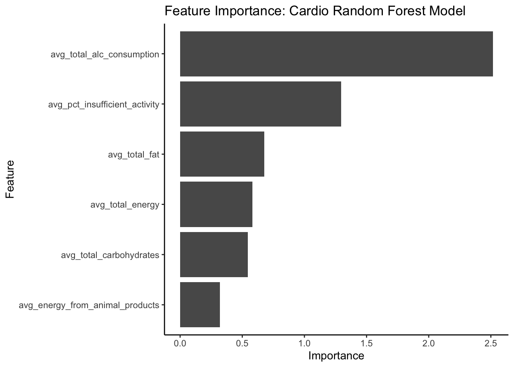
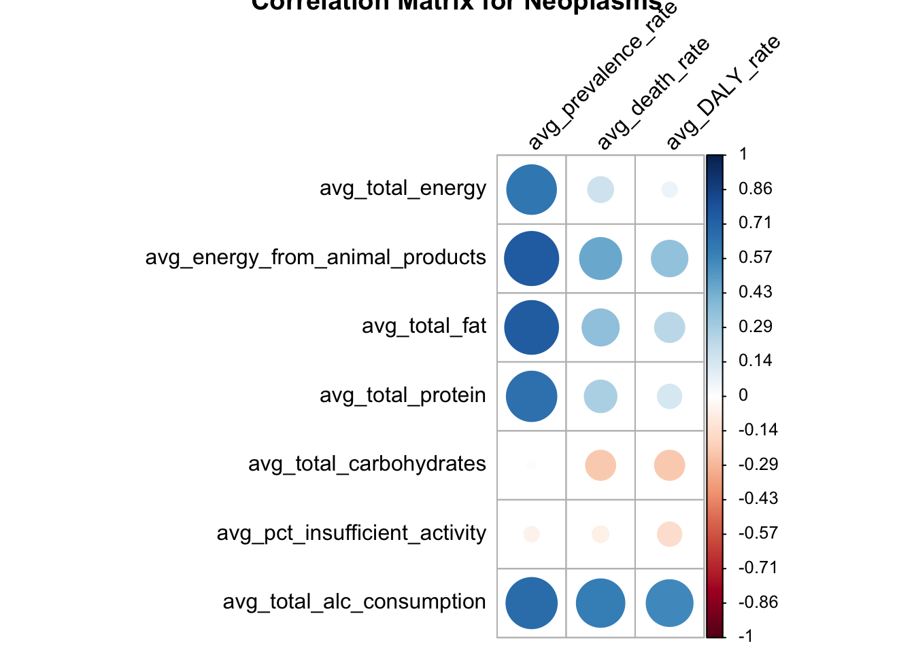
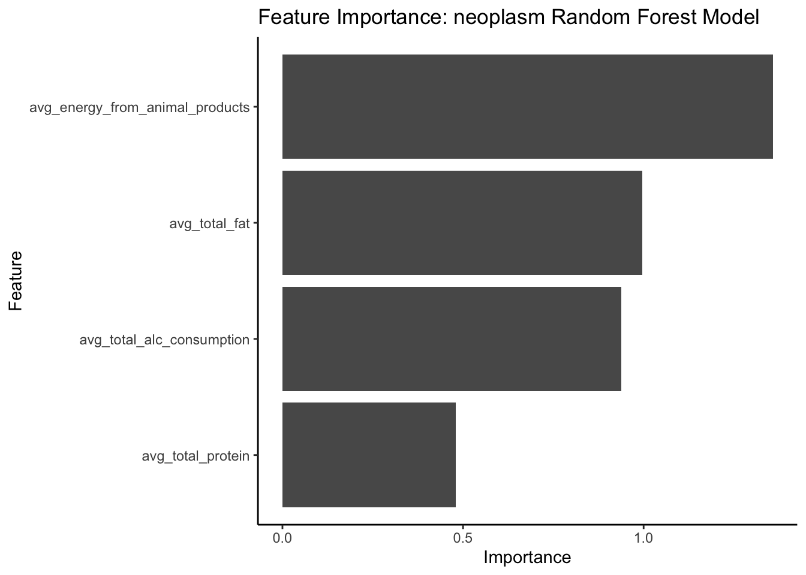
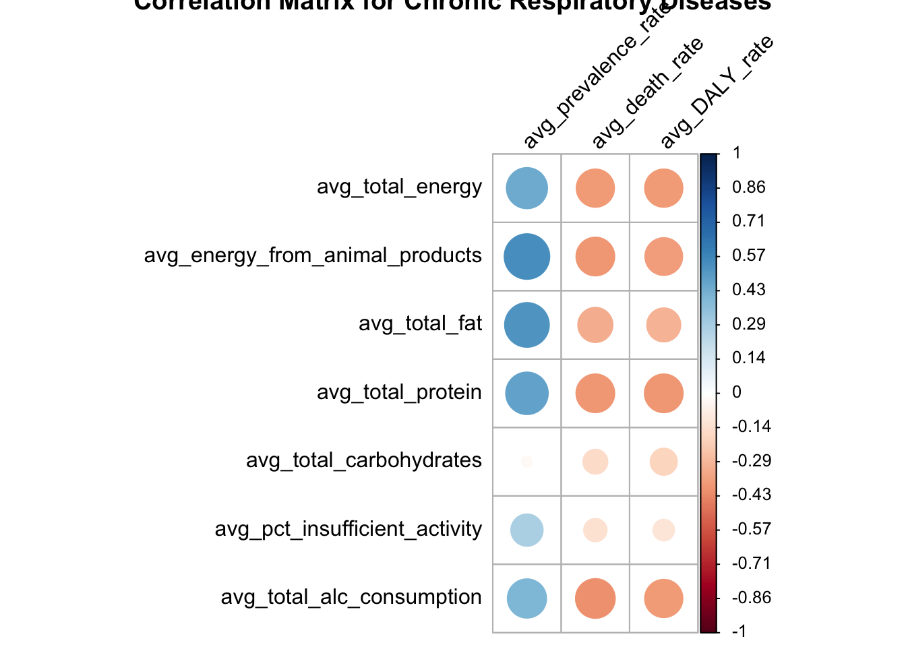
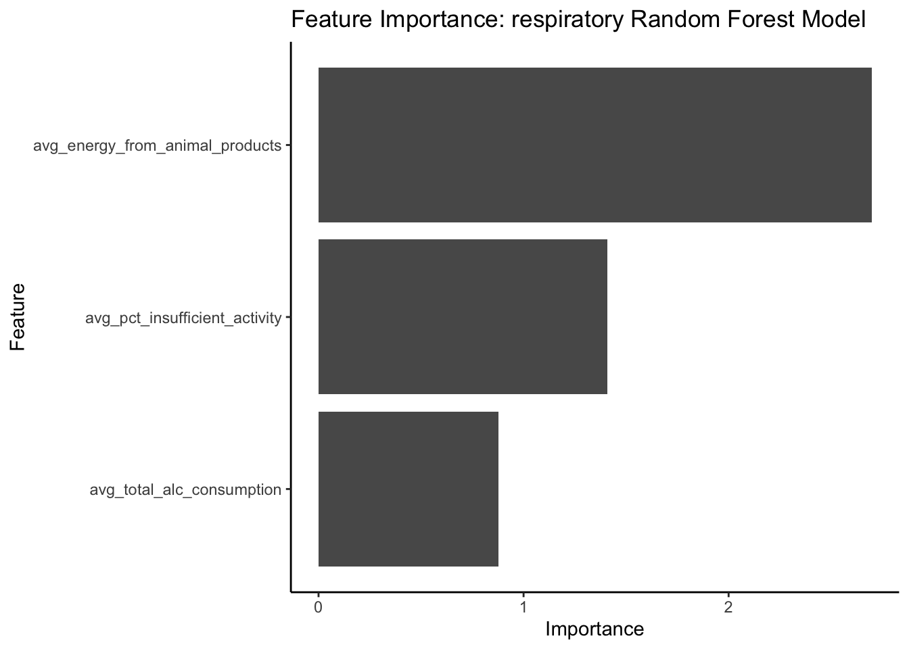

library(tidyverse)
library(readxl)
library(reshape2)
library(gridExtra)
library(corrplot)
library(randomForest)
library(gbm)
library(neuralnet)
library(regclass)
library(pdp)
library(cluster)
library(factoextra)
library(DAAG)
library(caret)Code File
Global Nutrition and Health: Analyzing the Relationship Between Diet Composition and Disease Prevalence
Preparation
Load Libraries
Import Data
# load Macronutrient Composition Data
macronutrient_data <- read_excel('./data/Macronutrient Compositions_Cleaned.xlsx')
#load GBD Disease Prevalence Data
GBD_prevalence_data <- read_excel('./data/GBD Prevalence 2010-2019.xlsx')
#load GBD Disease Deaths Data (Diseases causing deaths in each country)
GBD_deaths_data <- read_excel('./data/GBD Death 2010-2019.xlsx')
#load GBD Disease DALYs Data (Disability-Adjusted Life Years)
GBD_DALY_data <- read_excel('./data/GBD DALYs 2010-2019.xlsx')
#load WHO Prevalence of insufficient physical activity among adults aged 18+ years (age-standardized estimate) (%)
phys_activity_data <- read_excel('./data/WHO Prevalence of insufficient physical activity among adults aged 18+ years (age-standardized estimate) (percent) 2000-2019.xlsx')
#load WHO Alcohol Consumption Data -- Alcohol, recorded per capita (15+) consumption (in litres of pure alcohol), by beverage type
alc_consumption_data <- read_excel('./data/Alcohol Consumption 2010-2019.xlsx')
#load Disease Data on specific Cardiovascular Diseases
cardio_specific_data <- read_excel('./data/GBD Cardio Causes 2010-2019.xlsx') %>%
pivot_wider(id_cols = c(location_id,location_name,cause_id,cause_name,year),
names_from = measure_name,
values_from = val) %>%
na.omit()Macronutrient Composition Averages Dataset
The Macronutrient Composition Data contains country-specific yearly diet composition values. However, the years included varies based on each country’s reporting cadence to the Food and Agriculture Organization of the United Nations. Thus, for the majority of my analysis I will be using averaged values across all included years for each country.
avg_macronutrient_data <- macronutrient_data %>%
filter(least_developed_country == 'No') %>%
filter(year >= 2000) %>%
group_by(location_id, country) %>%
summarize(
avg_total_energy = mean(total_energy, na.rm = TRUE),
#avg_energy_from_vegetal_products = mean(energy_from_vegetal_products, na.rm = TRUE),
avg_energy_from_animal_products = mean(energy_from_animal_products, na.rm = TRUE),
avg_total_fat = mean(total_fat, na.rm = TRUE),
#avg_fat_from_vegetal_products = mean(fat_from_vegetal_products, na.rm = TRUE),
#avg_fat_from_animal_products = mean(fat_from_animal_products, na.rm = TRUE),
avg_total_protein = mean(total_protein, na.rm = TRUE),
#avg_protein_from_vegetal_products = mean(protein_from_vegetal_products, na.rm = TRUE),
#avg_protein_from_animal_products = mean(protein_from_animal_products, na.rm = TRUE),
avg_total_carbohydrates = mean(total_carbohydrates, na.rm = TRUE))`summarise()` has grouped output by 'location_id'. You can override using the
`.groups` argument.# Output as text file to use in Tableau
write.csv(avg_macronutrient_data,"./data/R Output Data/avg_macronutrient_data.csv", row.names = FALSE)Include Least Develop Countries for Tableau
avg_macronutrient_data_tableau <- macronutrient_data %>%
filter(year >= 2000) %>%
group_by(location_id, country) %>%
summarize(
avg_total_energy = mean(total_energy, na.rm = TRUE),
#avg_energy_from_vegetal_products = mean(energy_from_vegetal_products, na.rm = TRUE),
avg_energy_from_animal_products = mean(energy_from_animal_products, na.rm = TRUE),
avg_total_fat = mean(total_fat, na.rm = TRUE),
#avg_fat_from_vegetal_products = mean(fat_from_vegetal_products, na.rm = TRUE),
#avg_fat_from_animal_products = mean(fat_from_animal_products, na.rm = TRUE),
avg_total_protein = mean(total_protein, na.rm = TRUE),
#avg_protein_from_vegetal_products = mean(protein_from_vegetal_products, na.rm = TRUE),
#avg_protein_from_animal_products = mean(protein_from_animal_products, na.rm = TRUE),
avg_total_carbohydrates = mean(total_carbohydrates, na.rm = TRUE))`summarise()` has grouped output by 'location_id'. You can override using the
`.groups` argument.Yearly with Averages
yearly_and_avg_macronutrient_data <- macronutrient_data %>%
filter(year >= 2000) %>%
inner_join(avg_macronutrient_data_tableau,
join_by(location_id, country))
# Output as text file to use in Tableau
write.csv(yearly_and_avg_macronutrient_data,"./data/R Output Data/yearly_and_avg_macronutrient_data.csv", row.names = FALSE)Insufficient Physical Activity Averages Dataset
Similar to the Macronutrient Composition data, I will primarily be working with the averages across years for the Prevalence of insufficient physical activity among adults aged 18+ years (age-standardized estimate) (%). This is defined as the “Percent of population attaining less than 150 minutes of moderate-intensity physical activity per week, or less than 75 minutes of vigorous-intensity physical activity per week, or equivalent.”. For the averages data set, I will be using data from 2010 and beyond. I will also be looking at the data for both sexes in this averaged data set.
avg_phys_activity_data <- phys_activity_data %>%
select(-c('ParentLocationCode', 'ParentLocation', 'SpatialDimValueCode',
'Percent_insufficient_phys_activity low', 'FactValueNumericHigh')) %>%
filter(Sex == 'Both sexes' & Year >= 2010) %>%
group_by(Location, location_id) %>%
summarize(avg_pct_insufficient_activity = mean(Percent_insufficient_phys_activity, na.rm = TRUE), .groups = "keep")
# Output as text file to use in Tableau
write.csv(avg_phys_activity_data,"./data/R Output Data/avg_phys_activity_data.csv", row.names = FALSE)Average and Reshape Alcohol Consumption Data
avg_alc_data <- alc_consumption_data %>%
select(-Location) %>%
filter(Beverage_Type != 'Other alcoholic beverages') %>%
mutate(Beverage_Type = if_else(Beverage_Type == 'All types', 'Total_Alcohol', Beverage_Type)) %>%
group_by(location_id, Beverage_Type) %>%
summarize(avg_alc_consumption = mean(alc_consump_per_capita, na.rm=TRUE, .groups="keep")) %>%
pivot_wider(id_cols = location_id, names_from = Beverage_Type, values_from = avg_alc_consumption) %>%
mutate(avg_total_alc_consumption = Total_Alcohol) %>%
select(-c(Beer, Wine, Spirits, Total_Alcohol))`summarise()` has grouped output by 'location_id'. You can override using the
`.groups` argument.# Output as text file to use in Tableau
write.csv(avg_alc_data,"./data/R Output Data/avg_alc_data.csv", row.names = FALSE)Average GBD Data Sets
Average Disease Deaths Data
avg_deaths_data <- GBD_deaths_data %>%
group_by(location_id, location_name, cause_id, cause_name) %>%
summarize(
avg_death_rate = mean(Death_Rate, na.rm = TRUE))`summarise()` has grouped output by 'location_id', 'location_name', 'cause_id'.
You can override using the `.groups` argument.Average Disease Prevalence Data
avg_prevalence_data <- GBD_prevalence_data %>%
group_by(location_id, location_name, cause_id, cause_name) %>%
summarize(
avg_prevalence_rate = mean(Prevalence_Rate, na.rm = TRUE))`summarise()` has grouped output by 'location_id', 'location_name', 'cause_id'.
You can override using the `.groups` argument.Average Disease DALYs Data
avg_DALY_data <- GBD_DALY_data %>%
group_by(location_id, location_name, cause_id, cause_name) %>%
summarize(
avg_DALY_rate = mean(DALY_rate, na.rm = TRUE))`summarise()` has grouped output by 'location_id', 'location_name', 'cause_id'.
You can override using the `.groups` argument.Combine GBD Data
Average
avg_GBD_combined <- avg_prevalence_data %>%
inner_join(avg_deaths_data,
join_by(location_id, location_name, cause_id, cause_name)) %>%
inner_join(avg_DALY_data,
join_by(location_id, location_name, cause_id, cause_name))
# Output as text file to use in Tableau
write.csv(avg_GBD_combined,"./data/R Output Data/avg_GBD_combined.csv", row.names = FALSE)Yearly (2010-2019)
yearly_GBD_combined <- GBD_prevalence_data %>%
inner_join(GBD_deaths_data,
join_by(location_id, location_name, cause_id, cause_name,year)) %>%
inner_join(GBD_DALY_data,
join_by(location_id, location_name, cause_id, cause_name,year))
# Output as text file to use in Tableau
write.csv(yearly_GBD_combined,"./data/R Output Data/yearly_GBD_combined.csv", row.names = FALSE)Yearly with Averages
yearly_and_avg_GBD_combined <- yearly_GBD_combined %>%
inner_join(avg_GBD_combined,
join_by(location_id, location_name, cause_id, cause_name))
# Output as text file to use in Tableau
write.csv(yearly_and_avg_GBD_combined,"./data/R Output Data/yearly_and_avg_GBD_combined.csv", row.names = FALSE)Join Datasets
Next, I will join the Average Macronutrient Composition Data with the GBD Disease Prevalence Data (combined genders) as well as the Insufficient Physical Activity Averages. I will use an inner join to assure I only include country-specific data for countries included in all data sets. My primary key will be location_id.
combined_data <- avg_GBD_combined %>%
inner_join(avg_macronutrient_data, join_by(location_id)) %>%
inner_join(avg_phys_activity_data, join_by(location_id)) %>%
inner_join(avg_alc_data, join_by(location_id))Data Exploration
Leading Disease Prevalence in USA
First, I wanted to look and see which disease categories are the most prevalent in the United States.
USA_data_prevalence <- avg_GBD_combined %>%
filter(location_id == 102) %>% # this is the location_id for USA
ungroup() %>%
select(c(avg_prevalence_rate, avg_death_rate, avg_DALY_rate, cause_name, cause_id)) %>%
slice_max(order_by=avg_prevalence_rate, n=10)
USA_data_prevalence# A tibble: 10 × 5
avg_prevalence_rate avg_death_rate avg_DALY_rate cause_name cause_id
<dbl> <dbl> <dbl> <chr> <dbl>
1 56716. 16.1 1375. Other non-communic… 640
2 44417. 39.5 1570. Neurological disor… 542
3 27161. 1.79 2736. Musculoskeletal di… 626
4 25346. 1.22 637. Skin and subcutane… 653
5 21431. 23.6 833. Digestive diseases 526
6 16979. 1.94 125. HIV/AIDS and sexua… 955
7 15993. 0.0126 2358. Mental disorders 558
8 14862. 12.4 377. Respiratory infect… 956
9 13908. 14.3 972. Unintentional inju… 696
10 13347. 32.5 1371. Diabetes and kidne… 974Leading Disease Death Rates in USA
Next, I look to see which disease categories have the highest death rates in the United States.
USA_data_death <- avg_GBD_combined %>%
filter(location_id == 102) %>% # this is the location_id for USA
ungroup() %>%
select(c(avg_prevalence_rate, avg_death_rate, avg_DALY_rate, cause_name, cause_id)) %>%
slice_max(order_by=avg_death_rate, n=10)
USA_data_death# A tibble: 10 × 5
avg_prevalence_rate avg_death_rate avg_DALY_rate cause_name cause_id
<dbl> <dbl> <dbl> <chr> <dbl>
1 7612. 153. 3327. Cardiovascular dis… 491
2 5403. 131. 3235. Neoplasms 410
3 44417. 39.5 1570. Neurological disor… 542
4 13009. 38.5 1353. Chronic respirator… 508
5 13347. 32.5 1371. Diabetes and kidne… 974
6 21431. 23.6 833. Digestive diseases 526
7 2679. 19.0 1039. Self-harm and inte… 717
8 5036. 16.8 1677. Substance use diso… 973
9 56716. 16.1 1375. Other non-communic… 640
10 13908. 14.3 972. Unintentional inju… 696Based on the charts above, I see that Cardiovascular diseases, Neoplasms, Neurological disorders, Chronic respiratory diseases, and Diabetes and kidney diseases are the leading causes of disease-related deaths. Meanwhile ‘other non-communicable diseases’, Neurological disorders, and Musculoskeletal disorders are the most prevalent disease categories in the United States.
Modeling
Create Prevalence Data Set
combined_prevalence_data <- combined_data %>%
ungroup() %>%
#select(-c(location_id, location_name, country, Location))
select(-c(country, Location))Create dataframe for evaluation metrics
# Initialize the data frame to store evaluation metrics
model_metrics <- data.frame(
model_name = character(),
MSPE = numeric(),
MAE = numeric(),
RMSE = numeric(),
R_squared = numeric(),
stringsAsFactors = FALSE
)
# Example function to add metrics to the data frame
add_model_metrics <- function(model_metrics, model_name, mspe, mae, rmse, r_squared) {
new_metrics <- data.frame(
model_name = model_name,
MSPE = mspe,
MAE = mae,
RMSE = rmse,
R_squared = r_squared,
stringsAsFactors = FALSE
)
rbind(model_metrics, new_metrics)
}1. Cardiovascular Diseases
Cardiovascular Diseases Data Set
Create Cardiovascular disease prevalence data set
# Cardiovascular diseases: cause_id = 491
cardio_data <- combined_prevalence_data %>%
filter(cause_id == 491) %>%
ungroup() %>%
select(-c(cause_name, cause_id))Correlation Matrix
corr_data_cardio <- cardio_data %>%
select(-c(location_id, location_name)) %>%
cor(use = "complete.obs") %>%
round(2)
corrplot(corr_data_cardio[4:10,1:3],
tl.col = "black", tl.srt = 45, cl.pos='r', cl.ratio=.4, cl.align.text='l', cl.offset=.5, cl.length=15,
title = "Correlation Matrix for Cardiovascular Diseases")
Data Preparation for Modeling
Drop Death Rate and DALY Rate from Data Frame
cardio_prevalence <- cardio_data %>%
select(-c(avg_death_rate, avg_DALY_rate))Move location_id and location_name to be last columns
Normalize Data and Set Cross-Validation Parameters
# Columns to move to the end
cols_to_move <- c('location_id', 'location_name')
set.seed(1234)
# Make a copy of the dataset to work with
cardio_prevalence_scaled_strings <- cardio_prevalence %>%
select(-one_of(cols_to_move), everything(), one_of(cols_to_move))
# Columns to exclude from scaling
exclude_cols <- c('location_id', 'location_name')
# Initialize empty vectors to store min and max values for scaling columns only
scaling_cols <- setdiff(colnames(cardio_prevalence_scaled_strings), exclude_cols)
min_values_cardio <- numeric(length = length(scaling_cols))
max_values_cardio <- numeric(length = length(scaling_cols))
# Normalize all numerical variables to range [0, 1] and save min/max values
for (j in seq_along(scaling_cols)) {
min_val_cardio <- min(cardio_prevalence_scaled_strings[[j]], na.rm = TRUE)
max_val_cardio <- max(cardio_prevalence_scaled_strings[[j]], na.rm = TRUE)
# Save min and max values
min_values_cardio[j] <- min_val_cardio
max_values_cardio[j] <- max_val_cardio
# Normalize the column
cardio_prevalence_scaled_strings[[j]] <- (cardio_prevalence_scaled_strings[[j]] - min_val_cardio) / (max_val_cardio - min_val_cardio)
}
# Define the cross-validation method
train_control_cardio <- trainControl(method = "cv", number = 10, savePredictions = "final")Create new data set without location_id and location_name
cardio_prevalence_scaled <- cardio_prevalence_scaled_strings %>%
select(-c(location_id, location_name))Scaled Cross-Validation Linear Regression Model
# Define the control for the RFE process
rfe_control_cardio <- rfeControl(functions = lmFuncs, method = "cv", number = 10)
# Perform RFE
rfe_results_cardio <- rfe(cardio_prevalence_scaled[, -1],
cardio_prevalence_scaled$avg_prevalence_rate,
sizes = c(2:8),
rfeControl = rfe_control_cardio)
# Print the results of RFE
print(rfe_results_cardio)
Recursive feature selection
Outer resampling method: Cross-Validated (10 fold)
Resampling performance over subset size:
Variables RMSE Rsquared MAE RMSESD RsquaredSD MAESD Selected
2 0.2032 0.2497 0.1652 0.02766 0.2394 0.02462 *
3 0.2071 0.2493 0.1680 0.02559 0.2520 0.02330
4 0.2064 0.2470 0.1662 0.02470 0.2232 0.01977
5 0.2071 0.2461 0.1675 0.02606 0.2312 0.02185
6 0.2071 0.2458 0.1676 0.02606 0.2346 0.02207
7 0.2071 0.2458 0.1676 0.02606 0.2346 0.02207
The top 2 variables (out of 2):
avg_total_alc_consumption, avg_energy_from_animal_products# Get the optimal set of features
optimal_features_cardio <- predictors(rfe_results_cardio)
print(optimal_features_cardio)[1] "avg_total_alc_consumption" "avg_energy_from_animal_products"# Train the model using the optimal features
model_cv_lm_cardio <- train(avg_prevalence_rate ~ .,
data = cardio_prevalence_scaled[, c(optimal_features_cardio, "avg_prevalence_rate")],
method = "lm", trControl = train_control_cardio)
# Print the model summary
print(model_cv_lm_cardio)Linear Regression
124 samples
2 predictor
No pre-processing
Resampling: Cross-Validated (10 fold)
Summary of sample sizes: 111, 112, 112, 110, 112, 112, ...
Resampling results:
RMSE Rsquared MAE
0.2037642 0.2204072 0.1654712
Tuning parameter 'intercept' was held constant at a value of TRUE# Extract predictions from the model
predictions_cardio <- model_cv_lm_cardio$pred
# Calculate evaluation metrics
mspe_cv_lm_cardio <- mean((predictions_cardio$pred - predictions_cardio$obs)^2)
mae_cv_lm_cardio <- mean(abs(predictions_cardio$pred - predictions_cardio$obs))
rmse_cv_lm_cardio <- sqrt(mspe_cv_lm_cardio)
r_squared_cv_lm_cardio <- cor(predictions_cardio$pred, predictions_cardio$obs)^2
# Print the evaluation metrics
metrics_cv_lm_cardio <- data.frame(Metric = c("MSPE", "MAE", "RMSE", "R-squared"),
Value = c(mspe_cv_lm_cardio, mae_cv_lm_cardio,
rmse_cv_lm_cardio, r_squared_cv_lm_cardio))
metrics_cv_lm_cardio Metric Value
1 MSPE 0.04210528
2 MAE 0.16539029
3 RMSE 0.20519571
4 R-squared 0.15942389# Extract the final model
final_model_cv_lm_cardio <- model_cv_lm_cardio$finalModel
summary(final_model_cv_lm_cardio)
Call:
lm(formula = .outcome ~ ., data = dat)
Residuals:
Min 1Q Median 3Q Max
-0.50222 -0.13913 -0.01528 0.12836 0.56185
Coefficients:
Estimate Std. Error t value Pr(>|t|)
(Intercept) 0.53364 0.03930 13.580 < 2e-16 ***
avg_total_alc_consumption -0.42902 0.10007 -4.287 3.66e-05 ***
avg_energy_from_animal_products 0.04063 0.11079 0.367 0.714
---
Signif. codes: 0 '***' 0.001 '**' 0.01 '*' 0.05 '.' 0.1 ' ' 1
Residual standard error: 0.2028 on 121 degrees of freedom
Multiple R-squared: 0.1964, Adjusted R-squared: 0.1831
F-statistic: 14.79 on 2 and 121 DF, p-value: 1.795e-06# Create a dataframe with column names and their min/max values
df_min_max_cardio <- data.frame(
Column_Name = scaling_cols,
Min_Value_cardio = min_values_cardio,
Max_Value_cardio = max_values_cardio,
Max_Min_cardio = max_values_cardio-min_values_cardio
)
# Print the dataframe
print(df_min_max_cardio) Column_Name Min_Value_cardio Max_Value_cardio
1 avg_prevalence_rate 4796.12490 11238.3973
2 avg_total_energy 2084.17010 3785.3803
3 avg_energy_from_animal_products 91.77625 1420.5800
4 avg_total_fat 35.13793 168.0855
5 avg_total_protein 46.40564 135.4154
6 avg_total_carbohydrates 306.23426 591.7045
7 avg_pct_insufficient_activity 9.14600 62.6740
8 avg_total_alc_consumption 0.00000 15.1610
Max_Min_cardio
1 6442.27245
2 1701.21021
3 1328.80380
4 132.94755
5 89.00976
6 285.47028
7 53.52800
8 15.16100# Extract the coefficients from the final model
scaled_coefficients_cv_lm_cardio <- coef(final_model_cv_lm_cardio)
# Function to convert scaled coefficients back to their original scale
convert_to_original_scale <- function(beta_scaled, predictor, df_min_max) {
max_min_response <- df_min_max_cardio$Max_Min[df_min_max_cardio$Column_Name == "avg_prevalence_rate"]
max_min_predictor <- df_min_max_cardio$Max_Min[df_min_max_cardio$Column_Name == predictor]
beta_original <- beta_scaled * max_min_response / max_min_predictor
return(beta_original)
}
# Initialize a list to store the original coefficients
original_coefficients_cv_lm_cardio <- list()
# Loop over each of the optimal features
for (feature in optimal_features_cardio) {
if (feature %in% names(scaled_coefficients_cv_lm_cardio)) {
beta_scaled <- scaled_coefficients_cv_lm_cardio[[feature]]
beta_original <- convert_to_original_scale(beta_scaled, feature, df_min_max_cardio)
original_coefficients_cv_lm_cardio[[feature]] <- beta_original
}
}
# Convert the list to a dataframe for better readability
original_coefficients_df_cv_lm_cardio <- data.frame(
Feature = names(original_coefficients_cv_lm_cardio),
Scaled_Coefficient = unlist(scaled_coefficients_cv_lm_cardio[optimal_features_cardio]),
Original_Coefficient = unlist(original_coefficients_cv_lm_cardio)
)
# Print the dataframe with the original coefficients
print(original_coefficients_df_cv_lm_cardio) Feature
avg_total_alc_consumption avg_total_alc_consumption
avg_energy_from_animal_products avg_energy_from_animal_products
Scaled_Coefficient Original_Coefficient
avg_total_alc_consumption -0.42902431 -182.302717
avg_energy_from_animal_products 0.04063468 0.197004Random Forest
Scaled Cross-Validation Random Forest Model
# Define the control for the RFE process
rfe_control_cardio_rf <- rfeControl(functions = rfFuncs, method = "cv", number = 10)
# Perform RFE
rfe_results_cardio_rf <- rfe(cardio_prevalence_scaled[, -1],
cardio_prevalence_scaled$avg_prevalence_rate,
sizes = c(2:8),
rfeControl = rfe_control_cardio_rf)
# Print the results of RFE
print(rfe_results_cardio_rf)
Recursive feature selection
Outer resampling method: Cross-Validated (10 fold)
Resampling performance over subset size:
Variables RMSE Rsquared MAE RMSESD RsquaredSD MAESD Selected
2 0.2034 0.2663 0.1679 0.04019 0.2133 0.03108
3 0.2011 0.2607 0.1651 0.04865 0.2585 0.03918
4 0.1957 0.3096 0.1591 0.04568 0.2805 0.03479
5 0.2001 0.2734 0.1615 0.04268 0.2575 0.03211
6 0.1927 0.2994 0.1594 0.03893 0.2363 0.02963 *
7 0.1944 0.2835 0.1596 0.03852 0.2361 0.02852
The top 5 variables (out of 6):
avg_total_alc_consumption, avg_pct_insufficient_activity, avg_total_energy, avg_total_carbohydrates, avg_total_fat# Get the optimal set of features
optimal_features_cardio_rf <- predictors(rfe_results_cardio_rf)
print(optimal_features_cardio_rf)[1] "avg_total_alc_consumption" "avg_pct_insufficient_activity"
[3] "avg_total_energy" "avg_total_carbohydrates"
[5] "avg_total_fat" "avg_energy_from_animal_products"# Train the model using the optimal features
model_rf_cardio <- train(avg_prevalence_rate ~ .,
data = cardio_prevalence_scaled[, c(optimal_features_cardio_rf, "avg_prevalence_rate")],
method = "rf", trControl = train_control_cardio)
# Print the model summary
print(model_rf_cardio)Random Forest
124 samples
6 predictor
No pre-processing
Resampling: Cross-Validated (10 fold)
Summary of sample sizes: 112, 112, 111, 112, 111, 110, ...
Resampling results across tuning parameters:
mtry RMSE Rsquared MAE
2 0.1908524 0.3287765 0.1555558
4 0.1871814 0.3622046 0.1535064
6 0.1869256 0.3712349 0.1548544
RMSE was used to select the optimal model using the smallest value.
The final value used for the model was mtry = 6.# Extract predictions from the model
predictions_cardio_rf <- model_rf_cardio$pred
# Calculate evaluation metrics
mspe_rf_cardio <- mean((predictions_cardio_rf$pred - predictions_cardio_rf$obs)^2)
mae_rf_cardio <- mean(abs(predictions_cardio_rf$pred - predictions_cardio_rf$obs))
rmse_rf_cardio <- sqrt(mspe_rf_cardio)
r_squared_rf_cardio <- cor(predictions_cardio_rf$pred, predictions_cardio_rf$obs)^2
# Print the evaluation metrics
metrics_rf_cardio <- data.frame(Metric = c("MSPE", "MAE", "RMSE", "R-squared"),
Value = c(mspe_rf_cardio, mae_rf_cardio,
rmse_rf_cardio, r_squared_rf_cardio))
metrics_rf_cardio Metric Value
1 MSPE 0.03643167
2 MAE 0.15480281
3 RMSE 0.19087083
4 R-squared 0.27814731# Extract the final model
final_model_rf_cardio <- model_rf_cardio$finalModel
summary(final_model_rf_cardio) Length Class Mode
call 4 -none- call
type 1 -none- character
predicted 124 -none- numeric
mse 500 -none- numeric
rsq 500 -none- numeric
oob.times 124 -none- numeric
importance 6 -none- numeric
importanceSD 0 -none- NULL
localImportance 0 -none- NULL
proximity 0 -none- NULL
ntree 1 -none- numeric
mtry 1 -none- numeric
forest 11 -none- list
coefs 0 -none- NULL
y 124 -none- numeric
test 0 -none- NULL
inbag 0 -none- NULL
xNames 6 -none- character
problemType 1 -none- character
tuneValue 1 data.frame list
obsLevels 1 -none- logical
param 0 -none- list print(optimal_features_cardio_rf)[1] "avg_total_alc_consumption" "avg_pct_insufficient_activity"
[3] "avg_total_energy" "avg_total_carbohydrates"
[5] "avg_total_fat" "avg_energy_from_animal_products"Feature Importance
# make dataframe from importance() output
feat_imp_df_cardio_prevalence <- importance(final_model_rf_cardio) %>%
data.frame() %>%
mutate(feature = row.names(.))
# plot dataframe
ggplot(feat_imp_df_cardio_prevalence, aes(x = reorder(feature, IncNodePurity),
y = IncNodePurity)) +
geom_bar(stat='identity') +
coord_flip() +
theme_classic() +
labs(
x = "Feature",
y = "Importance",
title = "Feature Importance: Cardio Random Forest Model"
)
2. Neoplasms
Neoplasms Data Set
Create neoplasms prevalence data set
# Neoplasms: cause_id = 410
neoplasm_prevalence <- combined_prevalence_data %>%
filter(cause_id == 410) %>%
select(-c("cause_name", "cause_id", location_id, location_name))Correlation Matrix
corr_data_neoplasm <- neoplasm_prevalence %>%
cor(use = "complete.obs") %>%
round(2)
corrplot(corr_data_neoplasm[4:10,1:3],
tl.col = "black", tl.srt = 45, cl.pos='r', cl.ratio=.4, cl.align.text='l', cl.offset=.5, cl.length=15,
title = "Correlation Matrix for Neoplasms")
Data Preparation for Modeling
Drop Death Rate from Data Frame
neoplasm_prevalence <- neoplasm_prevalence %>%
select(-c(avg_death_rate, avg_DALY_rate))Normalize Data and Set Cross-Validation Parameters
set.seed(1234)
# Make a copy of the dataset to work with
neoplasm_prevalence_scaled <- neoplasm_prevalence
# Initialize empty vectors to store min and max values
min_values_neoplasm <- numeric(length = ncol(neoplasm_prevalence_scaled))
max_values_neoplasm <- numeric(length = ncol(neoplasm_prevalence_scaled))
# Normalize all numerical variables to range [0, 1] and save min/max values
cols <- colnames(neoplasm_prevalence_scaled)
for (j in seq_along(cols)) {
min_val_neoplasm <- min(neoplasm_prevalence_scaled[[j]], na.rm = TRUE)
max_val_neoplasm <- max(neoplasm_prevalence_scaled[[j]], na.rm = TRUE)
# Save min and max values
min_values_neoplasm[j] <- min_val_neoplasm
max_values_neoplasm[j] <- max_val_neoplasm
# Normalize the column
neoplasm_prevalence_scaled[[j]] <- (neoplasm_prevalence_scaled[[j]] - min_val_neoplasm) / (max_val_neoplasm - min_val_neoplasm)
}
# Define the cross-validation method
train_control_neoplasm <- trainControl(method = "cv", number = 10, savePredictions = "final")Scaled Cross-Validation Linear Regression Model
# Define the control for the RFE process
rfe_control_neoplasm <- rfeControl(functions = lmFuncs, method = "cv", number = 10)
# Perform RFE
rfe_results_neoplasm <- rfe(neoplasm_prevalence_scaled[, -1],
neoplasm_prevalence_scaled$avg_prevalence_rate,
sizes = c(2:8),
rfeControl = rfe_control_neoplasm)
# Print the results of RFE
print(rfe_results_neoplasm)
Recursive feature selection
Outer resampling method: Cross-Validated (10 fold)
Resampling performance over subset size:
Variables RMSE Rsquared MAE RMSESD RsquaredSD MAESD Selected
2 0.1003 0.6846 0.07796 0.03909 0.1763 0.02594 *
3 0.1013 0.6836 0.07993 0.03842 0.1675 0.02567
4 0.1010 0.6859 0.07897 0.03887 0.1698 0.02556
5 0.1013 0.6846 0.07923 0.03896 0.1701 0.02568
6 0.1018 0.6815 0.07951 0.03882 0.1720 0.02551
7 0.1018 0.6815 0.07951 0.03882 0.1720 0.02551
The top 2 variables (out of 2):
avg_total_fat, avg_total_alc_consumption# Get the optimal set of features
optimal_features_neoplasm <- predictors(rfe_results_neoplasm)
print(optimal_features_neoplasm)[1] "avg_total_fat" "avg_total_alc_consumption"# Train the model using the optimal features
model_cv_lm_neoplasm <- train(avg_prevalence_rate ~ .,
data = neoplasm_prevalence_scaled[, c(optimal_features_neoplasm, "avg_prevalence_rate")],
method = "lm", trControl = train_control_neoplasm)
# Print the model summary
print(model_cv_lm_neoplasm)Linear Regression
124 samples
2 predictor
No pre-processing
Resampling: Cross-Validated (10 fold)
Summary of sample sizes: 111, 112, 112, 110, 112, 112, ...
Resampling results:
RMSE Rsquared MAE
0.1041856 0.7146261 0.07861683
Tuning parameter 'intercept' was held constant at a value of TRUE# Extract predictions from the model
predictions_neoplasm <- model_cv_lm_neoplasm$pred
# Calculate evaluation metrics
mspe_cv_lm_neoplasm <- mean((predictions_neoplasm$pred - predictions_neoplasm$obs)^2)
mae_cv_lm_neoplasm <- mean(abs(predictions_neoplasm$pred - predictions_neoplasm$obs))
rmse_cv_lm_neoplasm <- sqrt(mspe_cv_lm_neoplasm)
r_squared_cv_lm_neoplasm <- cor(predictions_neoplasm$pred, predictions_neoplasm$obs)^2
# Print the evaluation metrics
metrics_cv_lm_neoplasm <- data.frame(Metric = c("MSPE", "MAE", "RMSE", "R-squared"),
Value = c(mspe_cv_lm_neoplasm, mae_cv_lm_neoplasm,
rmse_cv_lm_neoplasm, r_squared_cv_lm_neoplasm))
metrics_cv_lm_neoplasm Metric Value
1 MSPE 0.01163741
2 MAE 0.07862887
3 RMSE 0.10787681
4 R-squared 0.64109138# Extract the final model
final_model_cv_lm_neoplasm <- model_cv_lm_neoplasm$finalModel
summary(final_model_cv_lm_neoplasm)
Call:
lm(formula = .outcome ~ ., data = dat)
Residuals:
Min 1Q Median 3Q Max
-0.24330 -0.05700 -0.01502 0.05251 0.47484
Coefficients:
Estimate Std. Error t value Pr(>|t|)
(Intercept) -0.03610 0.02124 -1.700 0.0917 .
avg_total_fat 0.40552 0.04704 8.621 3.03e-14 ***
avg_total_alc_consumption 0.28772 0.04587 6.273 5.70e-09 ***
---
Signif. codes: 0 '***' 0.001 '**' 0.01 '*' 0.05 '.' 0.1 ' ' 1
Residual standard error: 0.1061 on 121 degrees of freedom
Multiple R-squared: 0.6612, Adjusted R-squared: 0.6556
F-statistic: 118.1 on 2 and 121 DF, p-value: < 2.2e-16# Create a dataframe with column names and their min/max values
df_min_max_neoplasm <- data.frame(
Column_Name = cols,
Min_Value_neoplasm = min_values_neoplasm,
Max_Value_neoplasm = max_values_neoplasm,
Max_Min_neoplasm = max_values_neoplasm-min_values_neoplasm
)
# Print the dataframe
print(df_min_max_neoplasm) Column_Name Min_Value_neoplasm Max_Value_neoplasm
1 avg_prevalence_rate 534.08993 5402.8222
2 avg_total_energy 2084.17010 3785.3803
3 avg_energy_from_animal_products 91.77625 1420.5800
4 avg_total_fat 35.13793 168.0855
5 avg_total_protein 46.40564 135.4154
6 avg_total_carbohydrates 306.23426 591.7045
7 avg_pct_insufficient_activity 9.14600 62.6740
8 avg_total_alc_consumption 0.00000 15.1610
Max_Min_neoplasm
1 4868.73229
2 1701.21021
3 1328.80380
4 132.94755
5 89.00976
6 285.47028
7 53.52800
8 15.16100# Extract the coefficients from the final model
scaled_coefficients_cv_lm_neoplasm <- coef(final_model_cv_lm_neoplasm)
# Function to convert scaled coefficients back to their original scale
convert_to_original_scale <- function(beta_scaled, predictor, df_min_max) {
max_min_response <- df_min_max_neoplasm$Max_Min[df_min_max_neoplasm$Column_Name == "avg_prevalence_rate"]
max_min_predictor <- df_min_max_neoplasm$Max_Min[df_min_max_neoplasm$Column_Name == predictor]
beta_original <- beta_scaled * max_min_response / max_min_predictor
return(beta_original)
}
# Initialize a list to store the original coefficients
original_coefficients_cv_lm_neoplasm <- list()
# Loop over each of the optimal features
for (feature in optimal_features_neoplasm) {
if (feature %in% names(scaled_coefficients_cv_lm_neoplasm)) {
beta_scaled <- scaled_coefficients_cv_lm_neoplasm[[feature]]
beta_original <- convert_to_original_scale(beta_scaled, feature, df_min_max_neoplasm)
original_coefficients_cv_lm_neoplasm[[feature]] <- beta_original
}
}
# Convert the list to a dataframe for better readability
original_coefficients_df_cv_lm_neoplasm <- data.frame(
Feature = names(original_coefficients_cv_lm_neoplasm),
Scaled_Coefficient = unlist(scaled_coefficients_cv_lm_neoplasm[optimal_features_neoplasm]),
Original_Coefficient = unlist(original_coefficients_cv_lm_neoplasm)
)
# Print the dataframe with the original coefficients
print(original_coefficients_df_cv_lm_neoplasm) Feature Scaled_Coefficient
avg_total_fat avg_total_fat 0.4055215
avg_total_alc_consumption avg_total_alc_consumption 0.2877192
Original_Coefficient
avg_total_fat 14.85078
avg_total_alc_consumption 92.39680Random Forest
Scaled Cross-Validation Random Forest Model
# Define the control for the RFE process
rfe_control_neoplasm_rf <- rfeControl(functions = rfFuncs, method = "cv", number = 10)
# Perform RFE
rfe_results_neoplasm_rf <- rfe(neoplasm_prevalence_scaled[, -1],
neoplasm_prevalence_scaled$avg_prevalence_rate,
sizes = c(2:8),
rfeControl = rfe_control_neoplasm_rf)
# Print the results of RFE
print(rfe_results_neoplasm_rf)
Recursive feature selection
Outer resampling method: Cross-Validated (10 fold)
Resampling performance over subset size:
Variables RMSE Rsquared MAE RMSESD RsquaredSD MAESD Selected
2 0.1175 0.6009 0.08834 0.04054 0.1587 0.02192
3 0.1081 0.6617 0.07988 0.04055 0.1511 0.02171
4 0.1078 0.6665 0.08115 0.03835 0.1344 0.01975 *
5 0.1080 0.6607 0.08215 0.03701 0.1400 0.02006
6 0.1085 0.6592 0.08110 0.03863 0.1445 0.02128
7 0.1096 0.6532 0.08250 0.03833 0.1346 0.02058
The top 4 variables (out of 4):
avg_total_alc_consumption, avg_energy_from_animal_products, avg_total_fat, avg_total_protein# Get the optimal set of features
optimal_features_neoplasm_rf <- predictors(rfe_results_neoplasm_rf)
print(optimal_features_neoplasm_rf)[1] "avg_total_alc_consumption" "avg_energy_from_animal_products"
[3] "avg_total_fat" "avg_total_protein" # Train the model using the optimal features
model_rf_neoplasm <- train(avg_prevalence_rate ~ .,
data = neoplasm_prevalence_scaled[, c(optimal_features_neoplasm_rf, "avg_prevalence_rate")],
method = "rf", trControl = train_control_neoplasm)
# Print the model summary
print(model_rf_neoplasm)Random Forest
124 samples
4 predictor
No pre-processing
Resampling: Cross-Validated (10 fold)
Summary of sample sizes: 112, 112, 112, 112, 112, 109, ...
Resampling results across tuning parameters:
mtry RMSE Rsquared MAE
2 0.1064476 0.6721951 0.07653389
3 0.1066068 0.6734143 0.07680485
4 0.1081302 0.6644950 0.07830742
RMSE was used to select the optimal model using the smallest value.
The final value used for the model was mtry = 2.# Extract predictions from the model
predictions_neoplasm_rf <- model_rf_neoplasm$pred
# Calculate evaluation metrics
mspe_rf_neoplasm <- mean((predictions_neoplasm_rf$pred - predictions_neoplasm_rf$obs)^2)
mae_rf_neoplasm <- mean(abs(predictions_neoplasm_rf$pred - predictions_neoplasm_rf$obs))
rmse_rf_neoplasm <- sqrt(mspe_rf_neoplasm)
r_squared_rf_neoplasm <- cor(predictions_neoplasm_rf$pred, predictions_neoplasm_rf$obs)^2
# Print the evaluation metrics
metrics_rf_neoplasm <- data.frame(Metric = c("MSPE", "MAE", "RMSE", "R-squared"),
Value = c(mspe_rf_neoplasm, mae_rf_neoplasm,
rmse_rf_neoplasm, r_squared_rf_neoplasm))
metrics_rf_neoplasm Metric Value
1 MSPE 0.01203295
2 MAE 0.07709449
3 RMSE 0.10969481
4 R-squared 0.62868769# Extract the final model
final_model_rf_neoplasm <- model_rf_neoplasm$finalModel
summary(final_model_rf_neoplasm) Length Class Mode
call 4 -none- call
type 1 -none- character
predicted 124 -none- numeric
mse 500 -none- numeric
rsq 500 -none- numeric
oob.times 124 -none- numeric
importance 4 -none- numeric
importanceSD 0 -none- NULL
localImportance 0 -none- NULL
proximity 0 -none- NULL
ntree 1 -none- numeric
mtry 1 -none- numeric
forest 11 -none- list
coefs 0 -none- NULL
y 124 -none- numeric
test 0 -none- NULL
inbag 0 -none- NULL
xNames 4 -none- character
problemType 1 -none- character
tuneValue 1 data.frame list
obsLevels 1 -none- logical
param 0 -none- list print(optimal_features_neoplasm_rf)[1] "avg_total_alc_consumption" "avg_energy_from_animal_products"
[3] "avg_total_fat" "avg_total_protein" Feature Importance
# make dataframe from importance() output
feat_imp_df_neoplasm_prevalence <- importance(final_model_rf_neoplasm) %>%
data.frame() %>%
mutate(feature = row.names(.))
# plot dataframe
ggplot(feat_imp_df_neoplasm_prevalence, aes(x = reorder(feature, IncNodePurity),
y = IncNodePurity)) +
geom_bar(stat='identity') +
coord_flip() +
theme_classic() +
labs(
x = "Feature",
y = "Importance",
title = "Feature Importance: neoplasm Random Forest Model"
)
3. Chronic Respiratory Diseases
Chronic Respiratory Diseases Data Set
Create Chronic Respiratory Diseases prevalence data set
# Chronic respiratory diseases: cause_id = 508
respiratory_prevalence <- combined_prevalence_data %>%
filter(cause_id == 508) %>%
select(-c("cause_name", "cause_id", location_id, location_name))Correlation Matrix
corr_data_respiratory <- respiratory_prevalence %>%
cor(use = "complete.obs") %>%
round(2)
corrplot(corr_data_respiratory[4:10,1:3],
tl.col = "black", tl.srt = 45, cl.pos='r', cl.ratio=.4, cl.align.text='l', cl.offset=.5, cl.length=15,
title = "Correlation Matrix for Chronic Respiratory Diseases")
Data Preparation for Modeling
Drop Death Rate from Data Frame
respiratory_prevalence <- respiratory_prevalence %>%
select(-c(avg_death_rate, avg_DALY_rate))Normalize Data and Set Cross-Validation Parameters
set.seed(1234)
# Make a copy of the dataset to work with
respiratory_prevalence_scaled <- respiratory_prevalence
# Initialize empty vectors to store min and max values
min_values_respiratory <- numeric(length = ncol(respiratory_prevalence_scaled))
max_values_respiratory <- numeric(length = ncol(respiratory_prevalence_scaled))
# Normalize all numerical variables to range [0, 1] and save min/max values
cols <- colnames(respiratory_prevalence_scaled)
for (j in seq_along(cols)) {
min_val_respiratory <- min(respiratory_prevalence_scaled[[j]], na.rm = TRUE)
max_val_respiratory <- max(respiratory_prevalence_scaled[[j]], na.rm = TRUE)
# Save min and max values
min_values_respiratory[j] <- min_val_respiratory
max_values_respiratory[j] <- max_val_respiratory
# Normalize the column
respiratory_prevalence_scaled[[j]] <- (respiratory_prevalence_scaled[[j]] - min_val_respiratory) / (max_val_respiratory - min_val_respiratory)
}
# Define the cross-validation method
train_control_respiratory <- trainControl(method = "cv", number = 10, savePredictions = "final")Scaled Cross-Validation Linear Regression Model
# Define the control for the RFE process
rfe_control_respiratory <- rfeControl(functions = lmFuncs, method = "cv", number = 10)
# Perform RFE
rfe_results_respiratory <- rfe(respiratory_prevalence_scaled[, -1],
respiratory_prevalence_scaled$avg_prevalence_rate,
sizes = c(2:8),
rfeControl = rfe_control_respiratory)
# Print the results of RFE
print(rfe_results_respiratory)
Recursive feature selection
Outer resampling method: Cross-Validated (10 fold)
Resampling performance over subset size:
Variables RMSE Rsquared MAE RMSESD RsquaredSD MAESD Selected
2 0.1591 0.4078 0.1264 0.02658 0.09219 0.02037 *
3 0.1606 0.4019 0.1303 0.02513 0.11495 0.02140
4 0.1614 0.3967 0.1310 0.02455 0.11772 0.02115
5 0.1621 0.3909 0.1315 0.02572 0.11376 0.02057
6 0.1631 0.3808 0.1326 0.02520 0.11017 0.02029
7 0.1631 0.3808 0.1326 0.02520 0.11017 0.02029
The top 2 variables (out of 2):
avg_energy_from_animal_products, avg_pct_insufficient_activity# Get the optimal set of features
optimal_features_respiratory <- predictors(rfe_results_respiratory)
print(optimal_features_respiratory)[1] "avg_energy_from_animal_products" "avg_pct_insufficient_activity" # Train the model using the optimal features
model_cv_lm_respiratory <- train(avg_prevalence_rate ~ .,
data = respiratory_prevalence_scaled[, c(optimal_features_respiratory, "avg_prevalence_rate")],
method = "lm", trControl = train_control_respiratory)
# Print the model summary
print(model_cv_lm_respiratory)Linear Regression
124 samples
2 predictor
No pre-processing
Resampling: Cross-Validated (10 fold)
Summary of sample sizes: 111, 112, 112, 110, 112, 112, ...
Resampling results:
RMSE Rsquared MAE
0.158675 0.4251591 0.1274361
Tuning parameter 'intercept' was held constant at a value of TRUE# Extract predictions from the model
predictions_respiratory <- model_cv_lm_respiratory$pred
# Calculate evaluation metrics
mspe_cv_lm_respiratory <- mean((predictions_respiratory$pred - predictions_respiratory$obs)^2)
mae_cv_lm_respiratory <- mean(abs(predictions_respiratory$pred - predictions_respiratory$obs))
rmse_cv_lm_respiratory <- sqrt(mspe_cv_lm_respiratory)
r_squared_cv_lm_respiratory <- cor(predictions_respiratory$pred, predictions_respiratory$obs)^2
# Print the evaluation metrics
metrics_cv_lm_respiratory <- data.frame(Metric = c("MSPE", "MAE", "RMSE", "R-squared"),
Value = c(mspe_cv_lm_respiratory, mae_cv_lm_respiratory,
rmse_cv_lm_respiratory, r_squared_cv_lm_respiratory))
metrics_cv_lm_respiratory Metric Value
1 MSPE 0.0267144
2 MAE 0.1275765
3 RMSE 0.1634454
4 R-squared 0.3625536# Extract the final model
final_model_cv_lm_respiratory <- model_cv_lm_respiratory$finalModel
summary(final_model_cv_lm_respiratory)
Call:
lm(formula = .outcome ~ ., data = dat)
Residuals:
Min 1Q Median 3Q Max
-0.33485 -0.10291 -0.01406 0.08552 0.48471
Coefficients:
Estimate Std. Error t value Pr(>|t|)
(Intercept) -0.007299 0.042059 -0.174 0.863
avg_energy_from_animal_products 0.532388 0.065677 8.106 4.82e-13 ***
avg_pct_insufficient_activity 0.325999 0.069268 4.706 6.77e-06 ***
---
Signif. codes: 0 '***' 0.001 '**' 0.01 '*' 0.05 '.' 0.1 ' ' 1
Residual standard error: 0.1604 on 121 degrees of freedom
Multiple R-squared: 0.3996, Adjusted R-squared: 0.3897
F-statistic: 40.27 on 2 and 121 DF, p-value: 3.939e-14# Create a dataframe with column names and their min/max values
df_min_max_respiratory <- data.frame(
Column_Name = cols,
Min_Value_respiratory = min_values_respiratory,
Max_Value_respiratory = max_values_respiratory,
Max_Min_respiratory = max_values_respiratory-min_values_respiratory
)
# Print the dataframe
print(df_min_max_respiratory) Column_Name Min_Value_respiratory Max_Value_respiratory
1 avg_prevalence_rate 3239.88563 13009.0378
2 avg_total_energy 2084.17010 3785.3803
3 avg_energy_from_animal_products 91.77625 1420.5800
4 avg_total_fat 35.13793 168.0855
5 avg_total_protein 46.40564 135.4154
6 avg_total_carbohydrates 306.23426 591.7045
7 avg_pct_insufficient_activity 9.14600 62.6740
8 avg_total_alc_consumption 0.00000 15.1610
Max_Min_respiratory
1 9769.15214
2 1701.21021
3 1328.80380
4 132.94755
5 89.00976
6 285.47028
7 53.52800
8 15.16100# Extract the coefficients from the final model
scaled_coefficients_cv_lm_respiratory <- coef(final_model_cv_lm_respiratory)
# Function to convert scaled coefficients back to their original scale
convert_to_original_scale <- function(beta_scaled, predictor, df_min_max) {
max_min_response <- df_min_max_respiratory$Max_Min[df_min_max_respiratory$Column_Name == "avg_prevalence_rate"]
max_min_predictor <- df_min_max_respiratory$Max_Min[df_min_max_respiratory$Column_Name == predictor]
beta_original <- beta_scaled * max_min_response / max_min_predictor
return(beta_original)
}
# Initialize a list to store the original coefficients
original_coefficients_cv_lm_respiratory <- list()
# Loop over each of the optimal features
for (feature in optimal_features_respiratory) {
if (feature %in% names(scaled_coefficients_cv_lm_respiratory)) {
beta_scaled <- scaled_coefficients_cv_lm_respiratory[[feature]]
beta_original <- convert_to_original_scale(beta_scaled, feature, df_min_max_respiratory)
original_coefficients_cv_lm_respiratory[[feature]] <- beta_original
}
}
# Convert the list to a dataframe for better readability
original_coefficients_df_cv_lm_respiratory <- data.frame(
Feature = names(original_coefficients_cv_lm_respiratory),
Scaled_Coefficient = unlist(scaled_coefficients_cv_lm_respiratory[optimal_features_respiratory]),
Original_Coefficient = unlist(original_coefficients_cv_lm_respiratory)
)
# Print the dataframe with the original coefficients
print(original_coefficients_df_cv_lm_respiratory) Feature
avg_energy_from_animal_products avg_energy_from_animal_products
avg_pct_insufficient_activity avg_pct_insufficient_activity
Scaled_Coefficient Original_Coefficient
avg_energy_from_animal_products 0.5323884 3.914034
avg_pct_insufficient_activity 0.3259990 59.496601Random Forest
Scaled Cross-Validation Random Forest Model
# Define the control for the RFE process
rfe_control_respiratory_rf <- rfeControl(functions = rfFuncs, method = "cv", number = 10)
# Perform RFE
rfe_results_respiratory_rf <- rfe(respiratory_prevalence_scaled[, -1],
respiratory_prevalence_scaled$avg_prevalence_rate,
sizes = c(2:8),
rfeControl = rfe_control_respiratory_rf)
# Print the results of RFE
print(rfe_results_respiratory_rf)
Recursive feature selection
Outer resampling method: Cross-Validated (10 fold)
Resampling performance over subset size:
Variables RMSE Rsquared MAE RMSESD RsquaredSD MAESD Selected
2 0.1596 0.4371 0.1252 0.03348 0.1789 0.02659
3 0.1497 0.5266 0.1189 0.03482 0.1751 0.03019 *
4 0.1578 0.4518 0.1258 0.03553 0.1953 0.03048
5 0.1559 0.4632 0.1250 0.03516 0.2057 0.03023
6 0.1549 0.4705 0.1249 0.03614 0.2056 0.03054
7 0.1571 0.4511 0.1272 0.03557 0.2095 0.02936
The top 3 variables (out of 3):
avg_energy_from_animal_products, avg_pct_insufficient_activity, avg_total_alc_consumption# Get the optimal set of features
optimal_features_respiratory_rf <- predictors(rfe_results_respiratory_rf)
print(optimal_features_respiratory_rf)[1] "avg_energy_from_animal_products" "avg_pct_insufficient_activity"
[3] "avg_total_alc_consumption" # Train the model using the optimal features
model_rf_respiratory <- train(avg_prevalence_rate ~ .,
data = respiratory_prevalence_scaled[, c(optimal_features_respiratory_rf, "avg_prevalence_rate")],
method = "rf", trControl = train_control_respiratory)note: only 2 unique complexity parameters in default grid. Truncating the grid to 2 .# Print the model summary
print(model_rf_respiratory)Random Forest
124 samples
3 predictor
No pre-processing
Resampling: Cross-Validated (10 fold)
Summary of sample sizes: 112, 111, 111, 112, 112, 112, ...
Resampling results across tuning parameters:
mtry RMSE Rsquared MAE
2 0.1453625 0.4878588 0.1167705
3 0.1447156 0.4983172 0.1167553
RMSE was used to select the optimal model using the smallest value.
The final value used for the model was mtry = 3.# Extract predictions from the model
predictions_respiratory_rf <- model_rf_respiratory$pred
# Calculate evaluation metrics
mspe_rf_respiratory <- mean((predictions_respiratory_rf$pred - predictions_respiratory_rf$obs)^2)
mae_rf_respiratory <- mean(abs(predictions_respiratory_rf$pred - predictions_respiratory_rf$obs))
rmse_rf_respiratory <- sqrt(mspe_rf_respiratory)
r_squared_rf_respiratory <- cor(predictions_respiratory_rf$pred, predictions_respiratory_rf$obs)^2
# Print the evaluation metrics
metrics_rf_respiratory <- data.frame(Metric = c("MSPE", "MAE", "RMSE", "R-squared"),
Value = c(mspe_rf_respiratory, mae_rf_respiratory,
rmse_rf_respiratory, r_squared_rf_respiratory))
metrics_rf_respiratory Metric Value
1 MSPE 0.02184332
2 MAE 0.11671587
3 RMSE 0.14779485
4 R-squared 0.48158353# Extract the final model
final_model_rf_respiratory <- model_rf_respiratory$finalModel
summary(final_model_rf_respiratory) Length Class Mode
call 4 -none- call
type 1 -none- character
predicted 124 -none- numeric
mse 500 -none- numeric
rsq 500 -none- numeric
oob.times 124 -none- numeric
importance 3 -none- numeric
importanceSD 0 -none- NULL
localImportance 0 -none- NULL
proximity 0 -none- NULL
ntree 1 -none- numeric
mtry 1 -none- numeric
forest 11 -none- list
coefs 0 -none- NULL
y 124 -none- numeric
test 0 -none- NULL
inbag 0 -none- NULL
xNames 3 -none- character
problemType 1 -none- character
tuneValue 1 data.frame list
obsLevels 1 -none- logical
param 0 -none- list print(optimal_features_respiratory_rf)[1] "avg_energy_from_animal_products" "avg_pct_insufficient_activity"
[3] "avg_total_alc_consumption" Feature Importance
# make dataframe from importance() output
feat_imp_df_respiratory_prevalence <- importance(final_model_rf_respiratory) %>%
data.frame() %>%
mutate(feature = row.names(.))
# plot dataframe
ggplot(feat_imp_df_respiratory_prevalence, aes(x = reorder(feature, IncNodePurity),
y = IncNodePurity)) +
geom_bar(stat='identity') +
coord_flip() +
theme_classic() +
labs(
x = "Feature",
y = "Importance",
title = "Feature Importance: respiratory Random Forest Model"
)